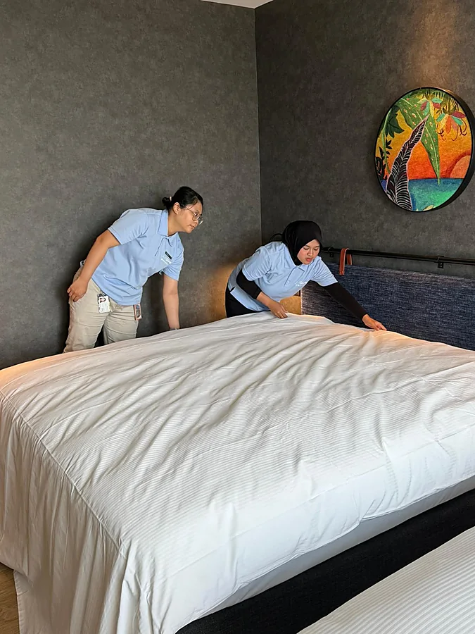
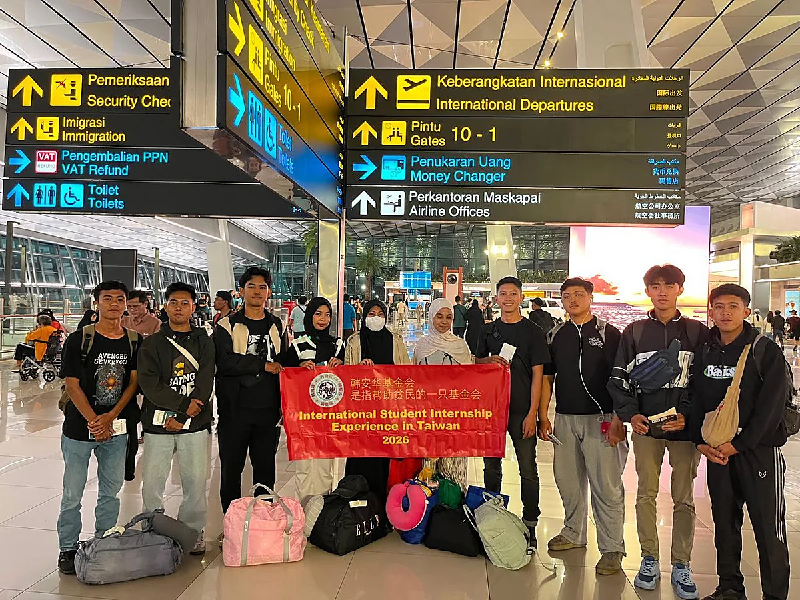
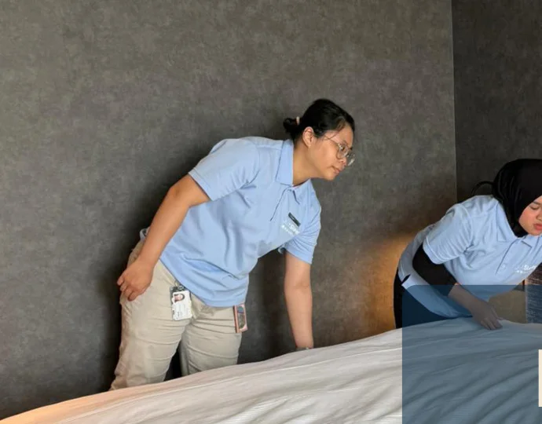
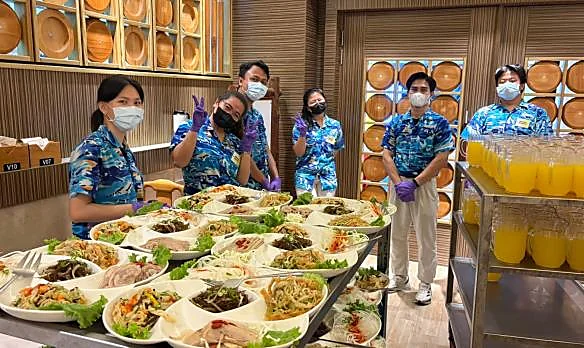
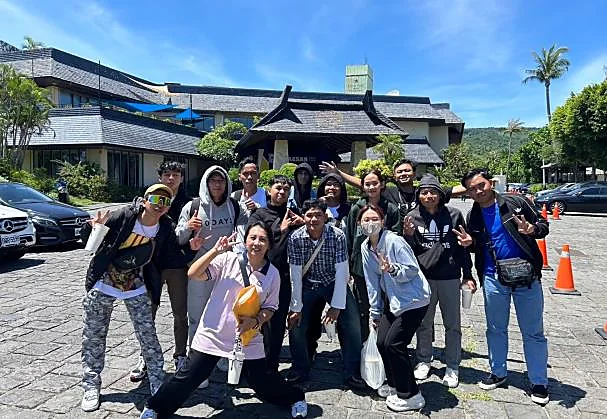
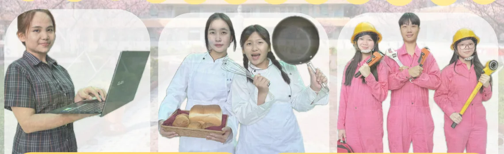
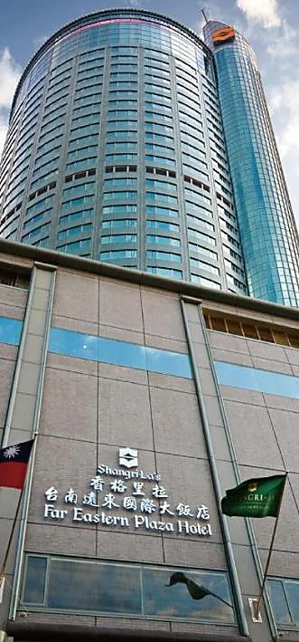
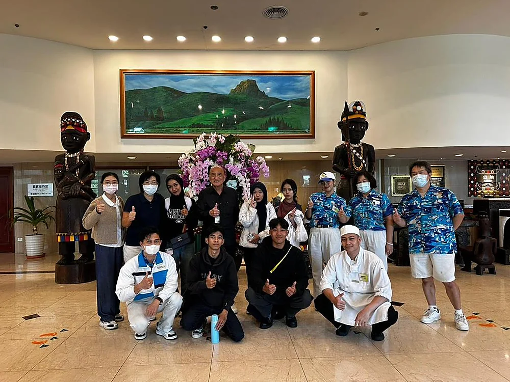
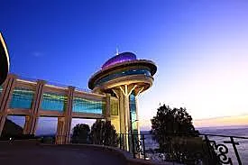
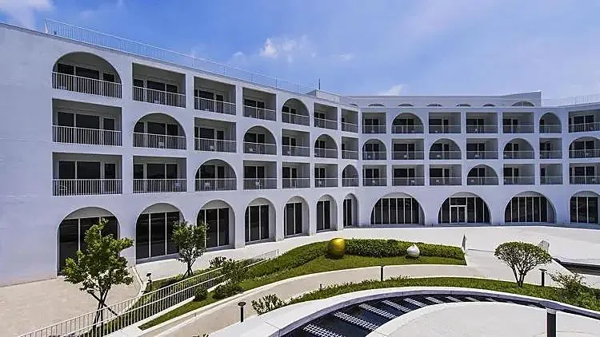

01
Mahasiswa Aktif
Magang Internasional
Pengalaman kerja langsung di hotel dan resort Taiwan untuk mengembangkan keterampilan, disiplin, komunikasi, dan pelayanan.
Indonesia-Taiwan
Han An Hua Foundation menghubungkan institusi pendidikan Indonesia dengan program magang dan pendidikan di Taiwan.
Khusus Dekan, Kaprodi, pimpinan perguruan tinggi, ketua yayasan, kepala sekolah, dan unit kerja sama.





Tentang Kami
Kami mendampingi institusi dalam membangun program internasional yang relevan, terarah, dan berkelanjutan.
Program Kami

Pengalaman kerja langsung di hotel dan resort Taiwan untuk mengembangkan keterampilan, disiplin, komunikasi, dan pelayanan.
Program pendidikan vokasi yang menggabungkan bahasa, keterampilan, dan kesiapan melanjutkan studi.
Kerja Sama
Program dijalankan melalui kerja sama resmi antara institusi pendidikan Indonesia, Han An Hua Foundation, dan mitra di Taiwan.
Universitas, politeknik, akademi, sekolah menengah, dan yayasan pendidikan.
Penghubung komunikasi, koordinasi program, dan pendampingan peserta.
Hotel, resort, dan institusi pendidikan yang mendukung pelaksanaan program.
Mitra dan penempatan mengikuti kebutuhan serta ketersediaan program.




Jurusan Prioritas
Program magang diprioritaskan bagi mahasiswa aktif dari bidang yang relevan dengan industri hospitality.
Persiapan kamar, perlengkapan, kebersihan, dan standar operasional hotel.
Penataan meja, pelayanan restoran, komunikasi dengan tamu, dan kerja tim.
Persiapan bahan, penyajian, kebersihan, dan alur kerja dapur profesional.
Dokumentasi
Keberangkatan, pendampingan, pemeriksaan kesehatan, dan praktik langsung di Taiwan.
Kontak Institusi
Kontak ini ditujukan untuk Dekan, Kaprodi, Rektor atau pimpinan perguruan tinggi, ketua yayasan, kepala sekolah, dan unit kerja sama.
Tidak perlu mengisi formulir. Pendaftaran mahasiswa tidak dilakukan langsung melalui website.
Lokasi
Lihat lokasi dan informasi publik kami di Google Maps.
Buka Google Maps